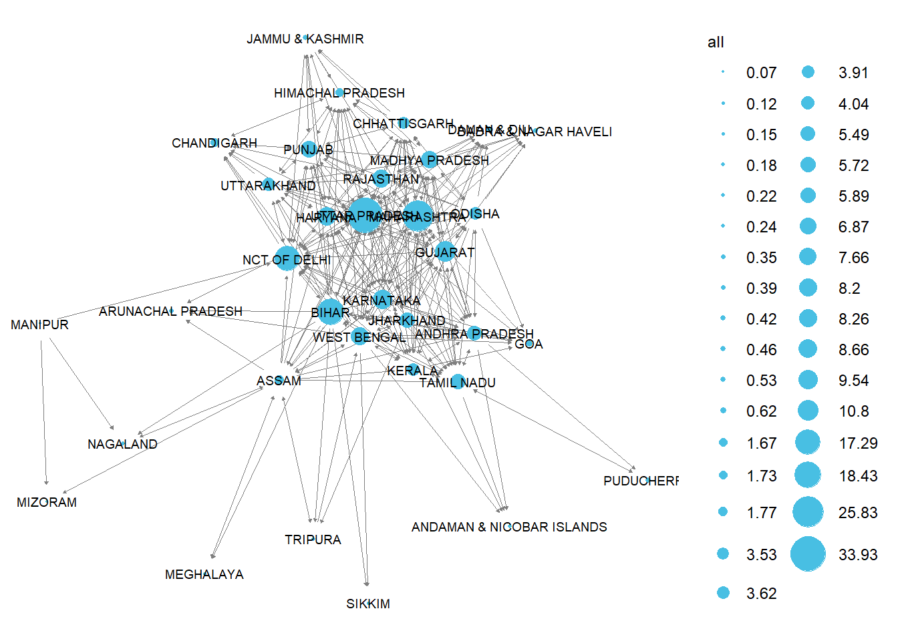

Internal Migration for Work Patterns in India
Migration
Reasons for Migration
India
Network Analysis
About the Project
Context regarding Migration and Census data in India
The Indian Census collects information about demographics such as population, education levels, languages spoken and migration. It is collected once in every ten years and the latest one was collected in 2011. The data collection for the 2021 round has not been collected yet due to the Coronavirus pandemic (Bharadwaj & Batra, 2022).
For this project, the dataset utilised is the Indian Census Migration Data for the year 2011 (Table D03). I chose the dataset labelled as India which contains information on a state-wise/union-territory-wise level.
In this project, I limited my analysis to internal migration, that is, movement of people to different states/union territories within India. The Indian Census has two definitions of migrants:
Migrant by birth place: This is a person whose enumeration occurs in a place that is not their birthplace (Government of India, n.d.).
Migrant by place of residence: This is a person whose place of enumeration in the current Census is different from the residence they were enumerated in during the last Census (Government of India, n.d.).
Table D03 uses the second definition, it also includes information about the number of years they have resided in the area and reasons why they migrated.
Moreover, there is the concept of sending states and receiving states. A sending state refers to the original location of the migrants and receiving state refers to the destination of the migrants. Typically, sending states represent that there is a lack of opportunities (such as lack of work) in that area and receiving states represent that there are more opportunities, in the context of work, there may be a certain industry such as textile or information technology that attracts more people.
Migration for Work
This project focuses on the migrants that move to other areas due to employment reasons, by utilising network analysis.
Research Aim
To identify top sending and receiving states of migrants for work. Moreover, to study patterns regarding the states they move to and variation in the same across urban and rural areas. This will help guide policy formulation.
Details regarding the project
Migration is studied via network analysis in this project. There are 28 states and 6 union territories included in the analysis, where a connection is present if for example, an individual moved from State A to State B. Moreover, this connection is weighted, that is the analysis takes into account the proportion of individuals who moved for work from State A to State B to the total number of individuals who migrated for work. There is movement between virtually every state and union territory so to show only when there was a substantial amount of individuals who moved- I only kept connections where the proportion of individuals who moved for work was greater or equal than 2%.
Technical Details about the Project
This project is intended for a general audience that may not be familiar with network analysis but is interested in learning about Indian Migration. Network analysis enables to see the flows of migrations and the connections on a state level so it has been utilised. If anyone is interested to know more about the packages and network algorithms used, I have provided details here.
Details about the networks
Migration network for entire India- 34 nodes and 352 edges
For the other 2 networks, since it is looking at flows to or from a specific state, the nodes and edges just equal to the places they have a connection with.
Migration network for Uttar Pradesh as the sending state- 26 nodes and 25 edges
Migration network for Maharashtra as the sending state- 22 nodes and 21 edges
All 3 networks are weighted (based on proportion of individuals who moved for work) and directed (movement from State A to State B).
Packages used
I utilised the igraph package for creating the networks and calculating associated attributes such as strength.
This dashboard consists of several map visualisations which were created using the sf,sp,raster and geosphere packages. The map data was taken from GADM.
The sankey network plots (for Urban and Rural Migration) were created via the networkD3 package.
Finally, this dashboard was made using the flexdashboard package.
Top Sending States
Uttar Pradesh emerges as the state that sends out the most migrants for work, it is also the most highly populated state of India (Government of India, n.d.). It is interesting to note that, with the exception of West Bengal, all the other sending states share borders and fall in the Northern/Central region of India.
Top Receiving States
Maharashtra and the capital of India, Delhi- are the top receiving states/union territories of migrants. Each of these states/union territories have cities that are home to certain industries as listed below:
2 prominent cities that provide several work opportunities- Mumbai, the financial capital and Pune, an emerging destination for information technology and biotechnology, are present in Maharashtra (Singh, 2007; Butsch et al., 2017).
In addition to being the political centre, Delhi is a transport, commercial and cultural hub (Ram et. al., 2021).
Haryana contains Gurgaon, which falls under what is know as the National Capital Region (cities neighbouring Delhi) and also has several opportunities in finance and technology (The Editors of Encyclopaedia Britannica, 2023).
Gujarat contains Surat and Ahmedabad which are known for their diamond and textile industries respectively (Jayaram & Varma, 2020; Chowdhury, 2020).
Lastly, Bengaluru is present in Karnataka, which is regarded as the “Silicon Valley of India” due to having the largest information technology sector in the country (Dev, 2021).
Migration Patterns for Uttar Pradesh
Most of the top receiving states are included in the main states/union territories that migrants from Uttar Pradesh move to (Maharashtra, Delhi, Haryana, Gujarat). Other prominent states they move to are Punjab, and neighbouring states- Uttarakhand and Madhya Pradesh. It is important to note that migrants are willing to move considerable distances for work which is demonstrated by the large movement of people to Maharashtra and Gujarat.
Note: Both size and colour of the line have been used to depict the proportion of migrants moving. A line which is more towards purple and thicker has a greater proportion of migrants.
Legend for abbreviations used in the map
Andaman & Nicobar-AN, Arunachal Pradesh- AR, Assam- AS, Bihar-BR, Chandigarh- CH, Chhattisgarh- CG, Dadra & Nagar Haveli-DH, Daman & Diu-DD, Goa-GA, Gujarat-GJ, Haryana-HR, Himachal Pradesh-HP, Jammu & Kashmir- JK, Jharkhand-JH, Karnataka-KA, Kerala-KL, Lakshadweep-LD, Madhya Pradesh-MP, Maharashtra-MH, Manipur-MN, Meghalaya-ML, Mizoram-MZ, Nagaland-NL, Nct Of Delhi-DL, Odisha-OR, Puducherry-PY, Punjab-PB, Rajasthan-RJ, Sikkim-SK, Tamil Nadu-TN, Andhra Pradesh-AP, Tripura-TR, Uttar Pradesh-UP, Uttarakhand-UK, West Bengal-WB
Migration Patterns for Maharashtra
Maharashtra receives most migrants from the top sending states identified. Once again, migrants are willing to move to regions that are far, most notably demonstrated by the migration occurring from West Bengal. Additionally, the neighbouring states of Gujarat and Karnataka send a substantial amount of migrants to Maharashtra.
Note: Both size and colour of the line have been used to depict the proportion of migrants moving. A line which is more towards purple and thicker has a greater proportion of migrants.
Legend for abbreviations used in the map
Andaman & Nicobar-AN, Arunachal Pradesh- AR, Assam- AS, Bihar-BR, Chandigarh- CH, Chhattisgarh- CG, Dadra & Nagar Haveli-DH, Daman & Diu-DD, Goa-GA, Gujarat-GJ, Haryana-HR, Himachal Pradesh-HP, Jammu & Kashmir- JK, Jharkhand-JH, Karnataka-KA, Kerala-KL, Lakshadweep-LD, Madhya Pradesh-MP, Maharashtra-MH, Manipur-MN, Meghalaya-ML, Mizoram-MZ, Nagaland-NL, Nct Of Delhi-DL, Odisha-OR, Puducherry-PY, Punjab-PB, Rajasthan-RJ, Sikkim-SK, Tamil Nadu-TN, Andhra Pradesh-AP, Tripura-TR, Uttar Pradesh-UP, Uttarakhand-UK, West Bengal-WB
Community identification

This was created using the Walktrap algorithm present in igraph. It depicts sub-communities of migrant connection. The main takeaway from this graph is that typically individuals move to regions that are closer in distance. The modularity score was 0.13 which means that the sub-communities identified were significantly distinct from a random network.
Urban and Rural Migration for Work from Uttar Pradesh
This illustrates that majority of the people that move for work are from rural parts of Uttar Pradesh and that most move to Urban regions, demonstrating that Urban regions typically have a greater number of economic opportunities available.
Migration for Work to Urban and Rural Maharashtra
Similar to the graph depicting urban and rural migration from Uttar Pradesh, most of the migrants that come to Maharashtra are from rural areas and they work in the urban areas of Maharashtra- most likely in the cities of Mumbai and Pune, where job opportunities in the finance, technology and service sectors are present (Tumbe, 2016).
Conclusion
Inferences
The visualisations allow us to understand migration flows, identify where potential economic opportunities lie or are lacking and help in suggesting policies that can be undertaken.
Uttar Pradesh may have lower economic opportunities which leads to it sending out the highest number of migrants. Government initiatives can be taken to increase employment options in the state.
In contrast, the urban regions of Maharashtra present several work opportunities as it receives the greatest number of migrants for work. As established earlier, there are information technology, biotechnology, finance and service sectors present in the state which are possibly attracting large numbers of migrants. In Maharashtra, there may be challenges with employment as well as housing for migrants and natives. Therefore, in Maharashtra, the government could focus on implementing policies that deal with urbanisation arising from migration.
Additionally, focusing on policies that improve job options in rural areas can be undertaken since majority of the migrants hail from rural areas.
Future Research
Studying networks at a district or city level can be undertaken to get deeper insights of migration flows and to understand whether it is the entire state which sends or receives migrants or there are a few districts which are contributing to the state-wise trends observed.
Summarising Results
In conclusion, Uttar Pradesh has the largest outflow and Maharashtra has the largest inflow of migrants moving for work , urban areas tend to have more employment opportunities, and policies can be undertaken to enhance job opportunities in rural areas/Uttar Pradesh and effectively handle the growing population in urban regions/Maharashtra.
References
Bhardwaj, A., & Batra, S. (2022, July 26). No census 2021 in 2022 either - govt ‘puts exercise on hold, timeframe not yet decided’. ThePrint.https://theprint.in/india/no-census-2021-in-2022-either-govt-puts-exercise-on-hold-timeframe-not-yet-decided/1055772/
Butsch, C.; Kumar, S.; Wagner, P.D.; Kroll, M.; Kantakumar, L.N.; Bharucha, E.; Schneider, K.; Kraas, F. (2017). Growing ‘Smart’? Urbanization Processes in the Pune Urban Agglomeration. Sustainability, 9(2335). https://doi.org/10.3390/su9122335
Chowdhury, S. R. (2020). Migration and city competitiveness: A comparative analysis with Surat as a special case. Vision: The Journal of Business Perspective, 25(4), 460–470. https://doi.org/10.1177/0972262919900448
[Data Analytic]. (2022, Feb 10). [R Beginners] GGPLOT India Map in GGPLOT with states, districts,cities code included.[Video]. YouTube. https://www.youtube.com/watch?v=6LYxkGNi4R8&list=PL0R8XrhnXnYePIaBT1wI32AOeKcyT86pR&index=17
Dev, A. (2021, March 15). 3 waves of migrations that shaped Bengaluru. Hindustan Times. https://www.hindustantimes.com/cities/others/3-waves-of-migrations-that-shaped-bengaluru-101615660544003.html
Deshingkar, P. & Akter, S. (2013). Migration and Human Development in India. Human Development Reports, 2009/13. http://hdr.undp.org/en/content/migration-and-human- development-india
Government of India. (n.d.).Drop-in-article on census - no.8 (migration).
https://censusindia.gov.in/nada/index.php/catalog/40447
Government of India. (n.d.). POPULATION BY STATE/UT, AGE GROUP, SEX, AREA OF RESIDENCE AND EDUCATION LEVEL. CensusIndia. https://censusindia.gov.in/census.website/data/data-visualizations/Education_Punch-Card-Chart
Jayaram, N., Varma, D. (2020). Examining the ‘Labour’ in Labour Migration: Migrant Workers’ Informal Work Arrangements and Access to Labour Rights in Urban Sectors. Indian Journal of Labour Economics. 63, 999–1019. https://doi.org/10.1007/s41027-020-00288-5
Office of the Registrar General India. (2021). D-03: Migrants within the State/UT by place of last residence, duration of residence and reason of migration - 2011 (India). [Data set]. https://censusindia.gov.in/census.website/data/census-tables
Ognyanova, K. (2023, July 5). Static and dynamic network visualization with R. Katya Ognyanova. https://kateto.net/network-visualization
GADM. (2022). India- Shapefile. [Data set]. https://gadm.org/download_country.html
R Graph Gallery. (n.d.). Introduction to Interactive Sankey Diagram. https://r-graph-gallery.com/321-introduction-to-interactive-sankey-diagram-2.html
Ram, V. , Rao, . Vaddiparti Lova Surya Prakasa and Sundaram, . K.V. (2021, November 24). Delhi. Encyclopedia Britannica. https://www.britannica.com/place/Delhi
Singh, D.P.. (2007). Migration in Mumbai: Trends in Fifty Years. Demography India. 36(2). 315-327. (PDF) Migration in Mumbai: Trends in Fifty Years (researchgate.net)
Smith, A. [Statistics Ninja]. (2021, Nov 16). Working with sf geospatial geometries in R. [Video]. YouTube. https://www.youtube.com/watch?v=BgsN-tpolZM&list=PL0R8XrhnXnYePIaBT1wI32AOeKcyT86pR&index=16&t=518s
The Editors of Encyclopaedia Britannica. (2023, December 15). Gurugram. Encyclopædia Britannica. https://www.britannica.com/place/Gurugram
Tumbe, C. (2016). Urbanisation, demographic transition, and the growth of cities in India, 1870- 2020. C-35205-INC-1. International Growth Centre. https://www.theigc.org/wpcontent/uploads/2016/11/Tumbe-2016-Working-paper.pdf
Acknowledgment of use of ChatGPT
Utilised ChatGPT while creating the maps for reading in different map data, debugging errors that arose and creating the connections between different cities’ coordinates. Additionally, for a few lines of code pertaining to finding the state/union territories not included in the network or the list of nodes present in the networks for Uttar Pradesh and Maharashtra
Other useful sources
This included the R Graph gallery site for Sankey plots, YouTube videos on maps and working with Indian maps and the tutorial for network visualization.
Example of unclear network graph

Since network graphs are difficult to interpret, especially for denser networks such as the network studied in this project, I used alternative visualisations.